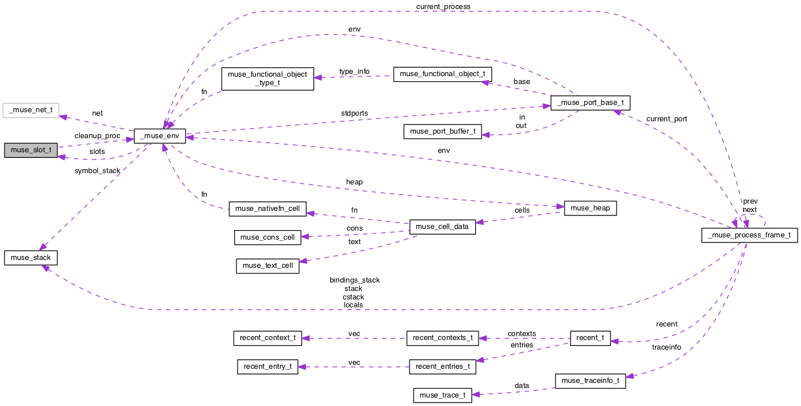

muSE
r716
Main Page
Related Pages
Modules
Data Structures
Files
Data Structures
Data Structure Index
Class Hierarchy
Data Fields
muse_slot_t Struct Reference
Collaboration diagram for muse_slot_t:

[
legend
]
The documentation for this struct was generated from the following file:
muse_opcodes.h
Generated on Mon May 16 2016 09:20:33 for muSE by
1.8.11
 Collaboration diagram for muse_slot_t: Collaboration diagram for muse_slot_t:
Collaboration diagram for muse_slot_t: Collaboration diagram for muse_slot_t: 1.8.11
1.8.11